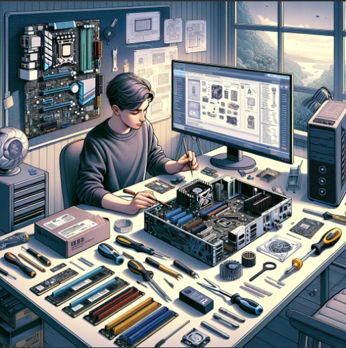

Futuro de la Ingeniería
Ensayo crítico (25 líneas) sobre la evolución de la arquitectura computacional frente a la IA y computación cuántica.
Abrir Actividad 1 →Estudiante de Ingeniería en Informática — UNETI
Evidencia académica de las prácticas de laboratorio de la Unidad Curricular Arquitectura del Computador "Sesión Didáctica 1". Integrando análisis técnico de hardware, especificación de casos de uso y reflexiones críticas.
Análisis práctico de componentes, diagnóstico de CPU, trazabilidad documental y organización modular.

Haz clic en cualquier tarjeta para ver el desarrollo completo de la actividad y su reflexión individual.
Ensayo crítico (25 líneas) sobre la evolución de la arquitectura computacional frente a la IA y computación cuántica.
Abrir Actividad 1 →Levantamiento técnico por software de 3 equipos distintos, tabla comparativa, zócalos, cuidados y registro fotográfico.
Abrir Actividad 2 →Investigación y tabla estructurada con imagen, nombre y aplicación de herramientas de hardware y software.
Abrir Actividad 3 →Especificación formal aplicada a la identificación y auditoría básica de la arquitectura de un computador en la Sesión Didáctica 1.
CU-001 — Auditar procesador y arquitectura básica del computador.Versión vigente: v0.1.0 (Fase 1 — Laboratorio VAC-SD1) • Responsable: Oscar Yván Zambrano Avendaño (V-31.269.474).
| Versión | Sesión / Fase | Fecha | Descripción del Cambio | Estado |
|---|---|---|---|---|
| v0.1.0 | VAC-SD1 (Fundamentos) | 2026-11-23 | Apertura del portafolio digital, portada, perfil del autor, 3 actividades prácticas de SD1, caso de uso CU-001 y reflexiones individuales. | Vigente |
| v0.2.0 | VAC-SD2 (Funcionamiento) | 2026-12 (Planificada) | Integración de práctica VAC-SD2, diagrama UML 2.5.1, caso de uso CU-002 con flujos alternos/excepción y reflexión individual #2. | Pendiente |
| v0.3.0 – v1.0.0 | VAC-SD3 a VAC-SD5 | 2027-01 / 2027-02 (Planificada) | Ensamblaje SOP (SD3), tickets ITIL 4 y sanitización ISO 27001 (SD4), mantenimiento SOP-002, problema PRB-001, artículos KCS KB-001/KB-002 y cierre v1.0.0 (SD5). | Pendiente |